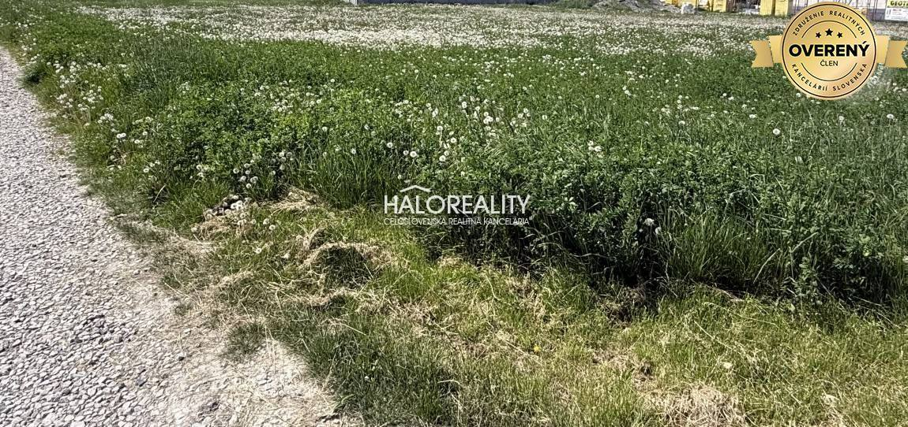
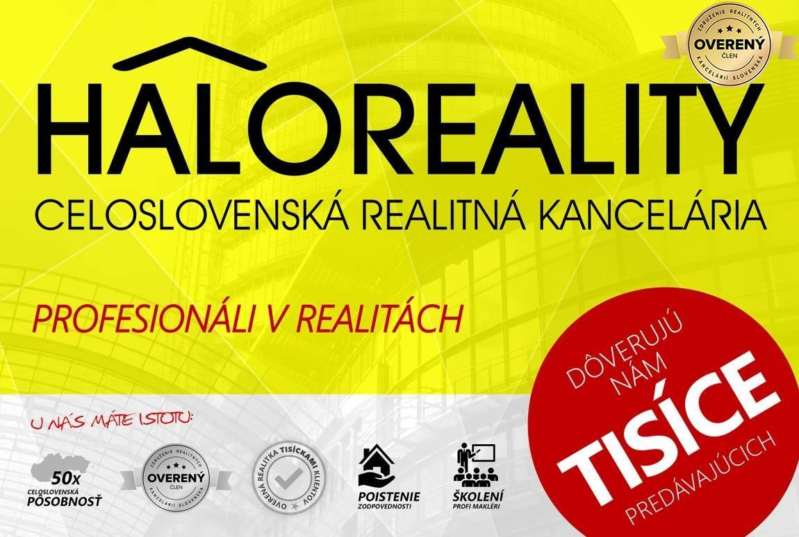

Predaj · Pozemok
Predaj, pozemok pre rodinný dom 800 m2 Andovce
Andovce
▶ Video prehliadka ◈ 3D prehliadka97 990 €122 € za m²




- Plocha800 m²
- Vlastníctvoosobné
- Energetická triedaG
Video a 3D prehliadka
Prehrávač sa načíta až po kliknutí.
O nehnuteľnosti
Hľadáte ideálne miesto pre Váš nový domov alebo investíciu, ktorá prináša hodnotu? Tento jedinečný pozemok v lukratívnej časti v Andovciach je príležitosťou, ktorá sa neobjaví každý deň.
DISPOZÍCIA:
Nachádza sa v novovybudovanej a obľúbenej lokalite, ktorá ponúka pohodlie a komfort, či investičný potenciál. Nehnuteľnosť je vo vlastníctve 1 majiteľa, nie je zaťažená žiadnou ťarchou ani vecným bre...
Viac info na našom webe .
Parametre
- Rozloha pozemku
- 800 m²
- Poschodie
- neuvedené
- Vlastníctvo
- osobné
- Status
- aktívne
- Balkón
- nie
- Lódžia
- nie
- Garáž
- nie
- Výťah
- nie
- Klimatizácia
- nie
- Energetický certifikát
- G
- Dátum zverejnenia
- 2025-05-01
Kde to je
Ďalšie ponuky
Celá ponuka